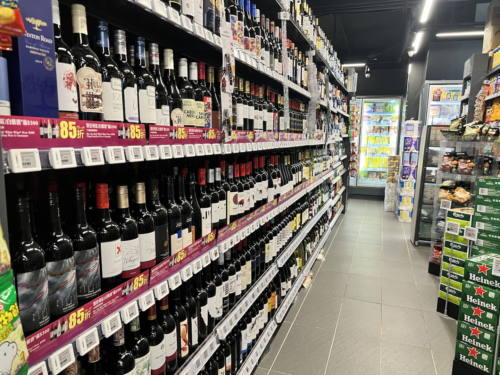

If you are comparing electronic price tags, digital price tags or electronic shelf labels, the core question is not whether the screen can show a price. The better question is whether the complete system - tag, gateway, software, integrations, battery life, templates and support - can run reliably across your stores for years.
| Data point | Number / finding | Why it matters | Source |
|---|---|---|---|
| Global electronic shelf label market | USD 2.09B in 2025, projected USD 7.32B by 2033, 17.4% CAGR. | ESL is moving from pilot technology to mainstream retail infrastructure. | Grand View Research |
| Walmart digital shelf label rollout | Walmart announced expansion of digital shelf labels to 2,300 stores by 2026. | Large retailers are using ESL to reduce manual work and speed shelf updates. | Walmart Corporate News |
| E-paper display behavior | E-paper is reflective and paper-like, which supports clear shelf-edge readability without a constant backlight. | Useful for dense retail aisles where labels need to be readable for years with low maintenance. | E Ink |
| Wireless standardization | Bluetooth SIG publishes an Electronic Shelf Label Profile. | Standardized ESL communication matters as retailers ask for interoperability and long-term support. | Bluetooth SIG |
| 2D product data at the shelf | GS1 Digital Link connects product identifiers to web-based product information. | Electronic price tags can bring QR-led product journeys directly to the physical shelf edge. | GS1 |

What Are Electronic Price Tags?
What are electronic price tags in simple terms?
Electronic price tags are small digital displays mounted on shelf rails, peg hooks, freezer doors, counters or warehouse racks. Instead of printing a new paper label every time a price changes, the retailer sends updated content from a central system to thousands of tags through gateways or access points.
Most modern systems use e-paper because it is easy to read under store lighting and does not need a constant backlight. E-paper is especially useful for price labels because the content stays visible even when the display is not actively refreshing. That is why electronic shelf labels can often run for years on coin-cell or thin battery packs, depending on size, update frequency and temperature conditions. For a deeper product-level breakdown, see AiESL's guide to ESL battery life.
The terms are often used interchangeably: electronic price tags, digital price tags, electronic shelf labels, digital shelf labels and ESL tags. In this article, electronic price tags refers to the complete shelf-edge system, not only the physical screen.
How are electronic price tags different from ordinary digital displays?
A digital signage screen is usually powered, bright and designed for video or rich advertising. An electronic price tag is smaller, lower-power and optimized for precise shelf data: product name, price, unit price, barcode or QR code, promotion, stock signal and sometimes color blocks or icons.
| System | Best use | Power model | Content frequency | Typical shelf role |
|---|---|---|---|---|
| Electronic price tags / ESL | SKU-level prices and product information. | Battery-powered, low power e-paper. | Frequent price and promo updates. | Primary shelf price label. |
| Paper labels | Low-change stores or temporary backup labels. | No electronics. | Manual replacement. | Traditional shelf price label. |
| LCD shelf-edge screens | Animated shelf media and category messaging. | Powered display. | High-frequency creative updates. | Advertising or category signage. |
| Barcode/RFID shelf labels | Warehouse location, inventory and picking workflows. | No display or powered readers. | Static ID and operational scans. | Location and item identification. |
How Do Electronic Price Tags Work?
How does an electronic price tag update from the POS or ERP?
A typical ESL workflow has five layers. First, product and price data lives in the POS, ERP, PIM or pricing engine. Second, ESL middleware maps that data to label templates. Third, a gateway or access point sends the update to the tag network. Fourth, the tag refreshes its screen. Fifth, monitoring software confirms whether the update succeeded.
This is where many cheap pilots fail: they buy tags but under-plan the middleware. A good system should handle price rules, template versions, failed update retries, store groups, role permissions and integration logs. AiESL positions this layer as open middleware, so retailers can manage mixed hardware and connect the shelf edge to AI pricing, POS and inventory workflows. See AiESL products and platform for the hardware range and platform direction.
Why does e-paper matter for electronic price tags?
E-paper matters because shelf labels need to be readable, quiet and efficient. A grocery aisle may have tens of thousands of labels. If every label needed constant power or emitted light, the operating cost and maintenance model would be very different. E-paper keeps the label visually close to paper while allowing the content to change digitally.
E Ink describes its display technology as reflective and paper-like, which is a good match for shelf edges where shoppers need fast readability rather than animation. Retailers still need to check the exact label technology: black-white-red, black-white-yellow, four-color and seven-color e-paper have different refresh speeds, price points and design limits. External reference: E Ink ePaper benefits.
Which wireless network should you choose?
There is no single best network for every store. Electronic price tags commonly use proprietary 2.4 GHz protocols, Bluetooth-based networks, infrared, NFC-assisted binding or hybrid gateway designs. Bluetooth SIG has an Electronic Shelf Label profile, which shows that standardization is becoming more important as retailers ask for interoperability and long-term support.
External reference: Bluetooth SIG Electronic Shelf Label Profile.
| Network option | Strengths | Watch-outs | Good fit |
|---|---|---|---|
| 2.4 GHz proprietary ESL network | Mature for large label fleets, strong gateway control, proven in supermarkets. | Vendor lock-in and gateway planning matter. | Large grocery, pharmacy, electronics and convenience chains. |
| Bluetooth ESL / BLE-based designs | Better standardization direction, familiar device ecosystem. | Coverage and battery performance depend on implementation. | Mixed IoT environments and newer deployments. |
| Infrared ESL | Precise local updates and historically proven in some retail systems. | Line-of-sight limitations and more infrastructure planning. | Stores already standardized on IR ESL. |
| NFC-assisted binding | Useful for commissioning, security and tag association. | Not a full fleet update method by itself. | Install, maintenance and proof-of-location workflows. |
Which Types Of Electronic Price Tags Fit Different Shelves?

Which electronic price tag size is right for standard shelves?
For most supermarket and pharmacy shelves, 1.54-inch, 2.13-inch, 2.66-inch and 2.9-inch labels cover the bulk of SKUs. Small tags work well for dense shelves where shoppers only need price, product name and unit price. Medium tags leave more room for QR codes, promotion badges and extra product data.
Which labels work best for fresh food, wine and premium retail?
Fresh food, wine, cosmetics and electronics often benefit from larger or color-capable labels. These categories need promotion visibility, origin details, QR codes, energy ratings, warranty notes or comparison information. A color e-paper tag can make discount and brand cues more visible without turning the shelf into a screen-heavy environment.
Which tags work in freezers and cold-chain areas?
Freezer deployments need labels with tested low-temperature performance, stronger housings and appropriate rails or clips. Refresh speed and battery life can change in cold environments, so retailers should ask for temperature-specific battery assumptions instead of accepting a generic battery number. For implementation context, see AiESL's supermarket ESL solution.
Which electronic price tags work for warehouses?
Warehouses often need bigger labels, high-contrast location IDs, barcode or QR support and pick-to-light or flash indicators. The label may not show a consumer price at all. It may show SKU location, replenishment status, batch code or picking priority. That is why warehouse shelf labels are a practical bridge between ESL and operations workflows.

Electronic Price Tags vs Paper Labels
When do electronic price tags beat paper labels?
Electronic price tags beat paper labels when a retailer has many SKUs, frequent price changes, multiple store locations, strict price accuracy requirements or high labor cost. Paper still works for very small stores with stable prices. But once pricing becomes dynamic, omnichannel, promotional or compliance-heavy, paper becomes an operating bottleneck.
| Criteria | Electronic price tags | Paper price labels | Best answer |
|---|---|---|---|
| Price update speed | Minutes or near-real-time depending on system size. | Manual; can take hours or days in large stores. | ESL wins for frequent changes. |
| Shelf-checkout accuracy | Centralized sync and update confirmation. | Human process, higher mismatch risk. | ESL wins for compliance and trust. |
| Labor requirement | Higher install effort, lower recurring label labor. | Low setup, recurring manual work. | Depends on update frequency. |
| Upfront cost | Higher hardware and software investment. | Low direct material cost. | Paper wins short term. |
| Long-term scalability | Strong across store chains and high SKU counts. | Weak as SKUs and promo cycles grow. | ESL wins at scale. |
| Data capability | QR codes, stock status, flash, task workflows, analytics. | Static printed data. | ESL wins for digital shelf operations. |
For a focused cost and operations comparison, read ESL vs paper labels.
How Much Do Electronic Price Tags Cost?
How much do electronic price tags cost per store?
The cost of an electronic price tag project depends on label count, display size, color capability, rails and accessories, gateways, software, integration, installation and support. A small pilot may use hundreds of tags. A supermarket rollout can involve tens of thousands of tags per store group.
Do not compare suppliers only by tag unit price. A low hardware quote can become expensive if it lacks good templates, binding tools, gateway coverage planning, integration support or remote monitoring. The right cost question is total cost per updated shelf, including the labor and error savings after go-live. For a dedicated cost model, use the internal pillar page electronic shelf label cost.
| Cost driver | What changes the price | Buyer question to ask |
|---|---|---|
| Tag size and color | Larger and multi-color e-paper costs more than small black-white labels. | Which SKUs truly need larger or color labels? |
| Battery requirement | High update frequency and cold areas can reduce life. | What battery life is verified at my update frequency and temperature? |
| Network infrastructure | Gateway density depends on store layout, shelves, walls and freezer zones. | Can you provide a coverage plan before rollout? |
| Software and middleware | Templates, monitoring, APIs, roles and stores can change license cost. | Is the software priced per store, tag, module or integration? |
| Installation and rails | Rail compatibility and store labor can be a major project cost. | Who handles rails, binding, store maps and QA? |
| Integration | POS, ERP, PIM and pricing engine connectors may need custom work. | Which connectors are standard and which are custom? |
When do electronic price tags pay back?
Payback usually comes from four buckets: labor saved on price changes, fewer price mismatch claims, faster promotion execution and better shelf operations. Additional upside can come from dynamic markdowns, inventory visibility, retail media or QR-led product education. The exact payback period depends on wage rates, update frequency, number of stores, shrink exposure and how much of the system is integrated beyond basic price display.
Walmart has publicly described digital shelf labels as a way to reduce manual work because a price change can be completed in minutes through the new system. Large retailers have the biggest labor leverage, but smaller chains can still benefit when they change prices often or operate regulated categories such as pharmacy, alcohol, fresh food or electronics.
Where Do Electronic Price Tags Create The Most Value?

How do supermarkets use electronic price tags?
Supermarkets use electronic price tags to manage high SKU counts, daily promotions, markdowns, fresh-food pricing and omnichannel price consistency. The strongest supermarket deployments connect labels to POS, promotion calendars, inventory signals and staff task tools. A label can show price, unit price, promotion flag, QR code and sometimes a flash indicator for staff picking or replenishment.
How do pharmacies and health retailers use electronic price tags?
Pharmacies and health retailers care about price accuracy, product detail, compliance and small shelf formats. Electronic price tags help reduce label clutter and can point shoppers to digital product information through QR codes. For regulated categories, template control is especially important because the wrong information at the shelf can create customer trust and compliance issues.
How do electronics and DIY stores use electronic price tags?
Electronics, DIY and home improvement stores use larger labels for feature comparisons, QR codes, stock status and warranty information. These stores often have fewer price changes than grocery, but each label can carry more decision-support content. A shelf-edge QR code can connect the physical store to installation guides, comparison pages or reviews.
Can electronic price tags support QR codes and GS1 Digital Link?
Yes. Many electronic price tags can show QR codes, barcodes or short URLs, depending on size and resolution. This matters because retail is moving toward richer 2D barcode use cases. GS1 Digital Link gives products a web-connected identifier that can support product data, traceability, promotions and consumer information. Electronic price tags are not a replacement for product barcodes, but they can place digital product journeys at the shelf edge.
How Should Retailers Pilot Electronic Price Tags?
What should a first ESL pilot include?
A good pilot is small enough to manage but real enough to expose operational issues. Do not pilot only on a clean demo shelf. Choose one live category with active price changes, one difficult shelf condition and one integration path. For example, a supermarket pilot might include wine, fresh produce and frozen items. A warehouse pilot might include one rack area with high picking volume.
- Define the business case: labor, price accuracy, promotion speed, stock visibility or customer experience.
- Map the data source: POS, ERP, PIM, WMS or pricing engine.
- Choose a representative label mix: small, medium, color and freezer or warehouse labels if relevant.
- Test template governance: price, unit price, QR code, promotion, country or compliance fields.
- Measure the rollout: update success rate, retry behavior, battery assumptions and staff workflow impact.
What should you ask an electronic price tag supplier before buying?
| Supplier question | Why it matters |
|---|---|
| Can your software connect to our POS, ERP or pricing engine? | Integration quality determines whether ESL becomes infrastructure or just a screen fleet. |
| Can we manage mixed label sizes, colors and brands from one platform? | Retailers often need different hardware by category and may already own legacy labels. |
| How do you verify update success? | Monitoring and retry logic protect shelf-checkout accuracy. |
| What battery life is tested at our update frequency? | Best-case battery claims are not enough for real stores. |
| How do you handle store maps, rails and tag binding? | Install workflow can decide whether rollout is smooth or painful. |
| Can we see case studies or similar deployments? | Proof matters for multi-store buying decisions. See AiESL customer cases. |
How Do Electronic Price Tags Support AI And Dynamic Pricing?
How can electronic price tags enable dynamic pricing without hurting shopper trust?
Electronic price tags make price updates technically easier, but trust depends on rules. Retailers should define guardrails: no unfair personal pricing at shelf, clear promotion rules, audit logs, approval workflows for sensitive categories and consistency between shelf, app and checkout. The AI layer should recommend or automate within boundaries, not surprise shoppers.
A practical AI ESL system connects demand, inventory, competitor price and margin rules, then updates the shelf when a change is approved. That can support markdown optimization, out-of-stock response, time-limited promotions and better alignment between online and offline channels. For a deeper strategic page, read AI dynamic pricing ESL.